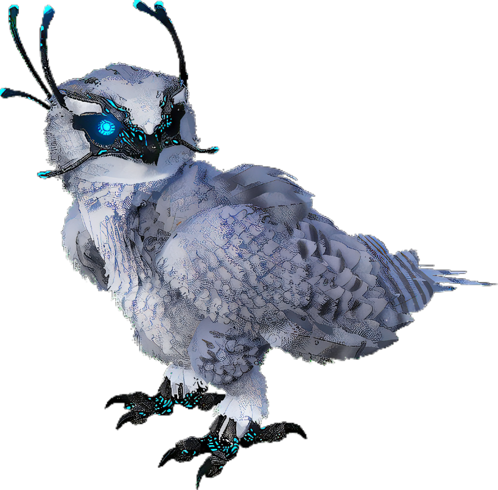

Discovering Bubo chinookus was a pleasant surprise. Owls are remarkable creatures, but they're not the type that could survive an extinction level event on their own. Since it never strays from the patch of frozen tundra we encountered, I believe the Obelisk was the key to its survival.
Clearly a descendant of modern Strigdae, Bubo shares many traits with its smaller ancestors. For example, it excretes waste in the form of pellets, which make excellent fertilizer, and their large wings let them save energy during long, silent flights. They even hunt in the same way: by diving towards the ground to attack their prey with powerful talons.
However, these talons also secrete a chemical with a high freezing point to slow down their prey, and they can even unleash this chemical in a wide cloud, temporarily freezing their foes.